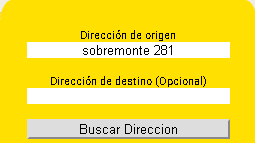
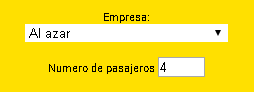
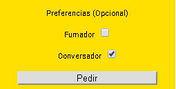
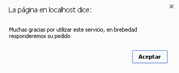
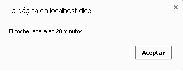
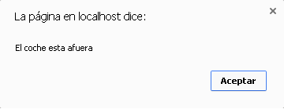

¿Qué es Río Cuarto Taxi?
Río Cuarto Taxi se trata de una aplicación sencilla y fácil de para solicitar taxis o remises en la ciudad de Río Cuarto, Córdoba, Argentina.
¿Quién es el creador?
Jacinto Jaimez, estudiantes de la carrera de Ciencias de la Computación de la Universidad Nacional de Río Cuarto y Co-Fundador de Tec-Pro Software.
¿Cómo pido un taxi o remís?
Ingresamos a la página de inicio, completamos la dirección de origen y la de destino, esta última es opcional. Luego damos clic en el botón buscar dirección, corroboramos que la dirección indicada en el mapa sea la correcta, de no ser así, la acomodamos arrastrando el marcador.

Una vez ingresado la dirección y corroborado que el mapa muestre la dirección correcta, seleccionamos la empresa de taxi o remís a la cual deseamos solicitar el servicio y la cantidad de pasajeros. La cantidad de personas máximas por auto es de cuatro.

Luego marcamos las opciones si deseamos fumar dentro del auto o si deseamos conversar con el chófer. Por último hacemos clic en el botón Pedir.


Luego de unos minutos nos saldrá un cartel indicando la cantidad de minutos que tardara el auto en estar fuera de nuestra casa.

Cundo el coche este fuera de nuestra casa, la web nuevamente mostrará un cartel, avisándonos de esto.

Tengo una central, ¿cómo accedo a este servicio?
Enviándonos un email mediante nuestro formulario de contacto.